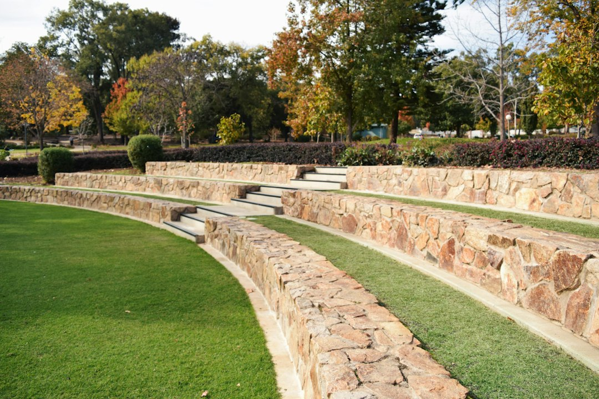

For Perth homeowners, the core numbers are a 0.5 m WA permit trigger and an indicative installed cost of about $250-$600 per square metre of wall face. That price guide excludes GST, excavation, drainage and difficult access. The main decisions are retained height, soil, access, water movement and whether the wall needs engineering, AS 4678 design input or BA3 design compliance documentation.
For homeowners comparing retaining walls perth options, the useful starting point is the block itself: sand, slope, access, drainage, height and whether the proposed wall triggers approval.
Retaining Walls Perth Explained
Perth Retaining Walls frames wall choice around local ground conditions, not a single default material. On the coastal sand plain, a wall may hold a level building pad or stop a sandy face from ravelling. Around the Darling Scarp foothills, steeper slopes, shallow soil over rock and winter drainage become stronger design questions.
Brief a contractor with the retained height, wall length, nearby fences or boundaries, access for excavation and whether the wall is part of other building work. Those details affect whether limestone, post-and-panel concrete, besser block, timber sleeper, rock, boulder or engineered retaining wall construction is a realistic fit.
A related overview of Perth retaining wall planning is useful when comparing material, approval and quote questions from another editorial angle.
Material Choices That Change The Quote
Limestone is described as Perth's most common wall material, helped by local quarrying and its suitability for sandy Swan Coastal Plain blocks. It still has to match the retained height, drainage needs, access and ground behind the wall.
Panel and post retaining walls become relevant when a taller or longer run needs a repeatable concrete system. Besser block can suit more structural or finished-wall situations. Timber sleeper is presented as a low garden terracing option. Rock and boulder walls sit closer to landscaping, but the same height and water questions still apply.
- Ask what the wall is holding: garden soil, a building pad, a driveway edge or a slope all change the design brief.
- Ask what is included: excavation, drainage, disposal, permit support and finishing can alter the final scope.
- Ask what is excluded: the published cost range excludes GST, excavation, drainage and difficult access.
Approval And Engineering Checks
The key WA approval point in the source page is the 0.5 metre retaining height threshold. It says a retaining wall generally needs a building permit once it retains more than 0.5 metres of ground.
A lower wall can still need approval if it is associated with other building work, affects adjoining land, or sits on a boundary wall or substantial dividing fence. Confirm the permit position with the relevant local government before work starts, especially where the wall is close to a neighbour or tied into other construction.
For engineered walls, the same source names AS 4678 and the Certificate of Design Compliance, BA3, process. Ask whether engineering, drawings, drainage design and permit documentation are included, priced separately, or outside the builder's scope.
Who This Applies To
This guide is for Perth homeowners planning a new wall, replacing an unsuitable wall, or comparing quotes for a block with sand, slope or access constraints. It also suits owners trying to decide whether a low garden wall is simple landscaping or a project that needs more formal checking.
It is less useful for anyone seeking a universal metre rate without site details. The published guide gives a broad installed wall-face range, but material, height, excavation, drainage and access all change the quote. A small low wall and a taller engineered wall are different purchasing decisions.
Before asking for a price, collect photos from both sides of the proposed wall, measure the approximate retained height, note nearby structures or fences, and describe how water currently moves after rain.
Reading A Written Quote
A written quote should make the wall type, length, approximate height, included works and exclusions easy to compare. The source page says contractors provide written fixed-price quotes, while also stating that prices, rates and estimates are indicative until individual circumstances are assessed.
Useful quote questions include whether subsoil drainage is included, whether excavation and spoil removal are included, what happens if rock or difficult access is found, and who handles permit documentation if required.
For homeowners comparing retaining wall builders Perth wide, the strongest quote names the material system, explains ground and access assumptions, and separates optional items from required work. That gives a clearer basis for comparing limestone, precast concrete, timber sleeper and engineered wall options.
- Measure the retained height. Record the approximate height of ground the wall will hold back, because the source page identifies 0.5 metres as the WA permit trigger.
- Document the site. Take photos of access, slopes, fences, nearby structures and drainage paths before asking for a quote.
- Compare inclusions. Check whether excavation, drainage, GST, permit support and difficult access are included or excluded.
- Confirm approval. Ask the relevant local government before assuming a wall is exempt from approval.
| Choice | Best supported use from the source page | Questions to ask before quoting |
|---|---|---|
| Limestone | Common local option for sandy Swan Coastal Plain conditions | Is drainage included, and is the wall height within a simple or engineered scope? |
| Post-and-panel concrete | Useful for taller or longer runs | What panel system is proposed, and does the quote include engineering or permit support? |
| Timber sleeper | Lower garden terracing option | What height is being retained, and what inclusions are allowed for? |
| Engineered wall | Projects needing formal design or compliance steps | Does the quote allow for AS 4678 design work and BA3 documentation where needed? |
Common questions
How much should a Perth retaining wall cost? The source page gives a broad guide of about $250-$600 per square metre of wall face installed. It says the figure depends on material, height and access, and excludes GST, excavation, drainage and difficult access.
Does every retaining wall in WA need a permit? No. The source page says a permit generally applies once a wall retains more than 0.5 metres of ground, but a lower wall can still need approval if it is tied to other building work, affects adjoining land or sits on a boundary or substantial dividing fence.
Which material is best for sandy Perth blocks? The source page says limestone is Perth's most common retaining wall material and suits the sandy Swan Coastal Plain well. The right choice still depends on wall height, budget, access, drainage and whether engineering is required.
What should I send before asking for a quote? Send photos, suburb or postcode, approximate wall length and retained height, access notes, and whether the wall is near a boundary, fence, driveway or building work. Those details help separate a simple garden wall from a more technical project.
This guide covers material choice, quote checks, approval triggers and practical planning for Perth retaining wall projects.